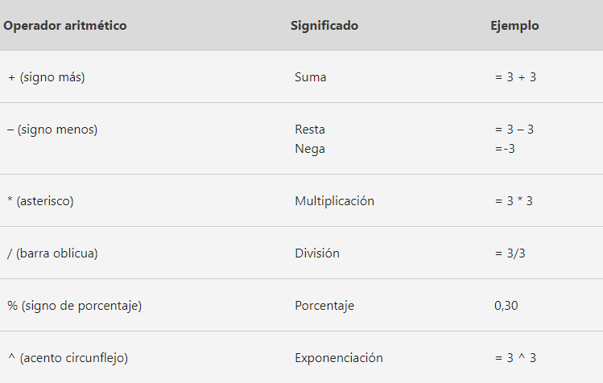
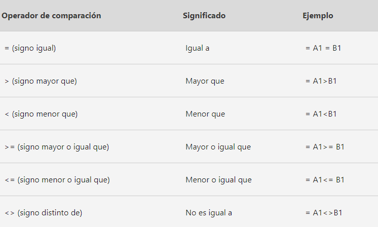

EXCEL
INTRODUCCION
Excel es un programa de Microsoft en donde puedes realizar
cualquier tipo de operación matemática a través de una hoja
de cálculo. Es una herramienta muy completa donde también
puedes realizar gráficos, crear tablas, entre varias funciones
más, las cuales nos ayuda a tomar decisiones importantes y
claves para el crecimiento de la empresa, para que una
empresa funcione de manera efectiva y tenga un progreso
continuo es vital que tenga sus datos actualizados.
OPERACIONES

FUNCIONES
BUSCARV: Esta función es útil cuando se tienen dos conjuntos de datos distribuidos en dos hojas de cálculo distintas y se quiere hacer una combinación de dichos datos. Por ejemplo, si en una hoja se tiene una lista de proveedores con sus correos electrónicos y en otra hoja se tienen sus razones sociales, ésta función ayuda a que aparezca el proveedor con ambos datos en un mismo lugar.
IDENTIFICAR VALORES DUPLICADOS: Esta función identifica si hay valores duplicados en un conjunto de datos y los señala. Para verificar se deben seleccionar todas las celdas a revisar, ir a la pestaña “Formato condicional” ubicada en la parte superior derecha de las opciones de la hoja de cálculo. Se debe seleccionar la opción “Resaltar reglas de celdas” y después la opción “Valores duplicados”. Excel mostrará si existen valores duplicados y dónde se encuentran.
FILTROS: Algunas bases de datos son muy extensas y tienen información adicional a la que se necesita en cierto momento. Con esta función básica de Excel es posible filtrar, ordenar u ocultar datos para tener una mejor visualización de la información.
En la parte superior derecha se encuentra la opción “Ordenar y Filtrar”, desde ahí se puede elegir si ordenar los datos por orden alfabético, por valores de mayor a menor, o personalizar el orden de los elementos. También se pueden poner filtros personalizados y esconder temporal o definitivamente celdas, columnas o filas.